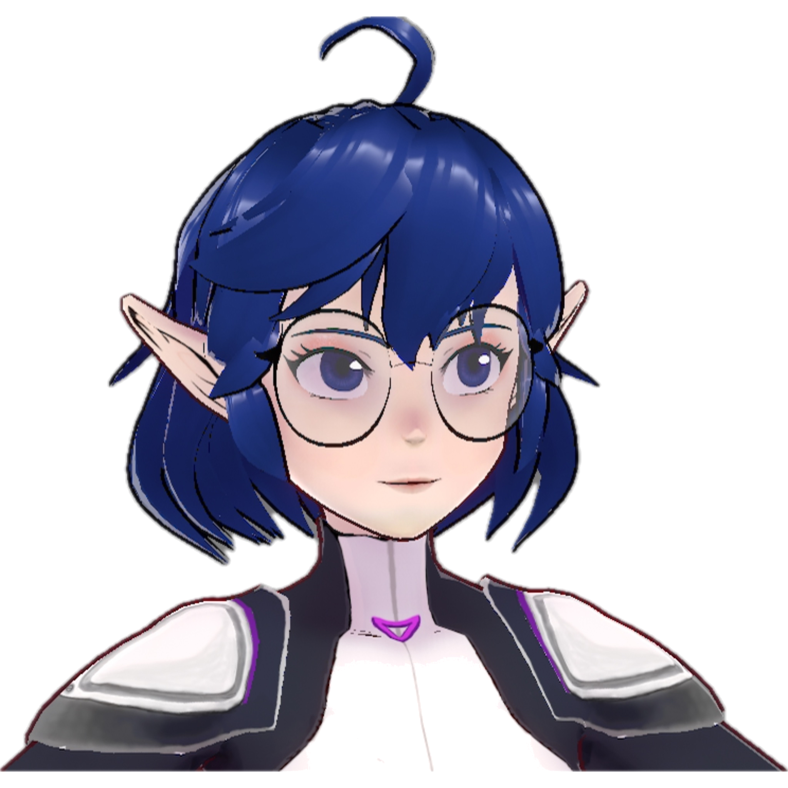
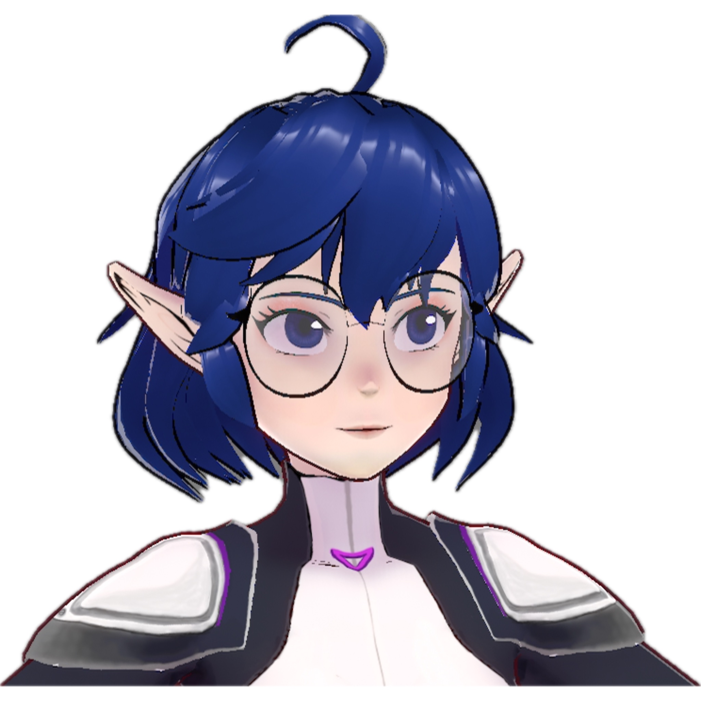
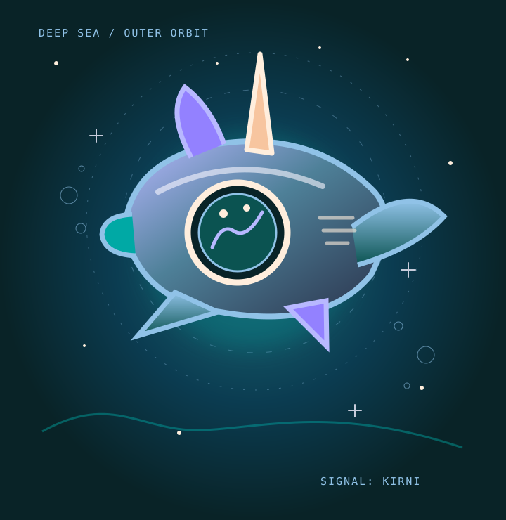

TRANSMISSION RECEIVED / CHANNEL SAL
A little magic
beneath the sea.
Hi, I'm Sal — Salahare. I love bringing ideas to life through art, stories, games and a healthy dose of giant mechs. Come explore a sea of possibilities with me.

Meet the creator
behind the helm.
Somewhere between the sketchbook and the stars, you'll find Sal.

hello!Art, stories and a little wonder.
I'm Sal, and I enjoy making and exploring worlds: drawing, animation, big mechanical designs, story-rich games, and adventures with friends.
Sometimes it's a quiet creative session. Other times it turns into a Dream Drops Crew collaboration where absolutely anything can happen.
However you found your way here, you're welcome to stay awhile.

When the ocean
meets outer space.
In the Dream Drops Crew's shared tale, Sal's ship Kirni ends up crash-landing in JD's magical forest. Now imagine that same curious spirit taking the next expedition below the waves, where ancient wonders hide under distant stars.
This undersea voyage is a playful website theme, inspired by Sal's love of machines, imagination and the crew's story—not a claim about new story canon.
Latest livestreams.
Up to six of Sal's latest public YouTube livestreams, refreshed automatically when the API is connected.
Opening the viewing deck
Searching the starlit sea for stories…
Come say hello.
Art, gaming and friends—here are the places to find Sal above the waves.